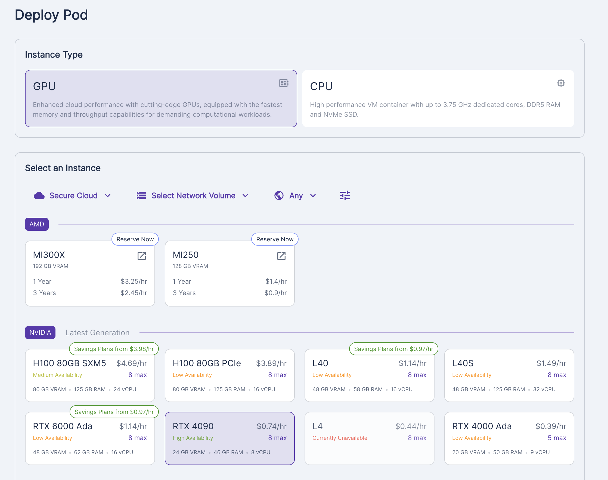
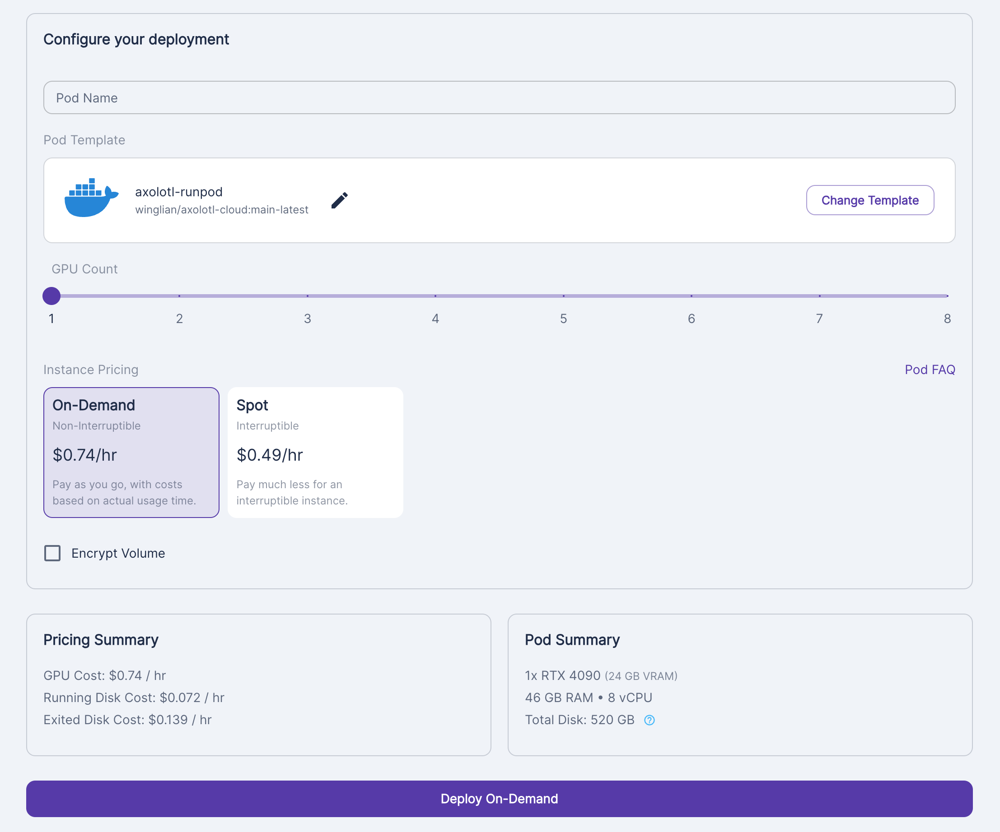
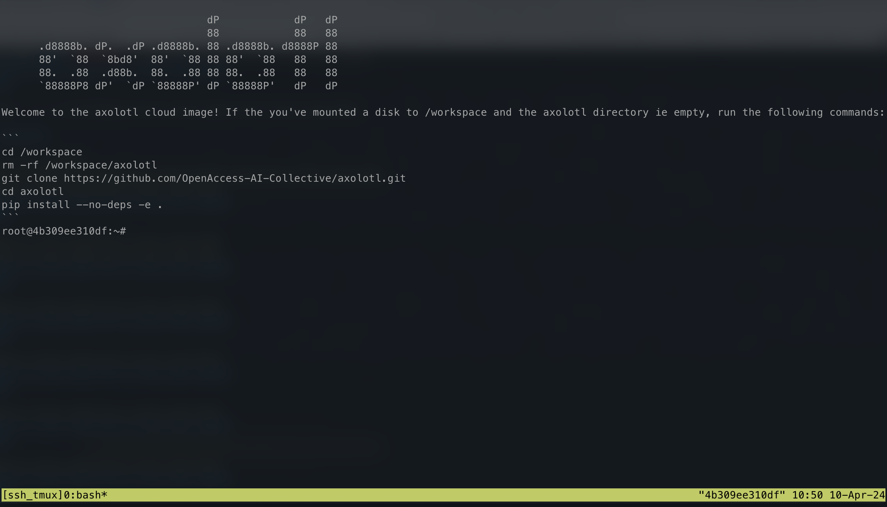
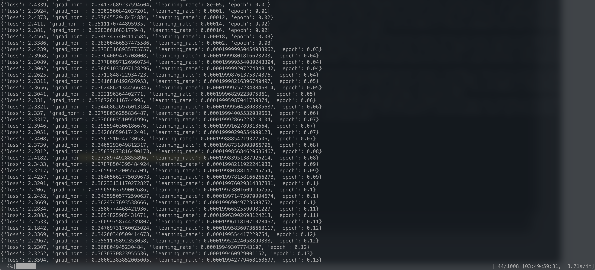
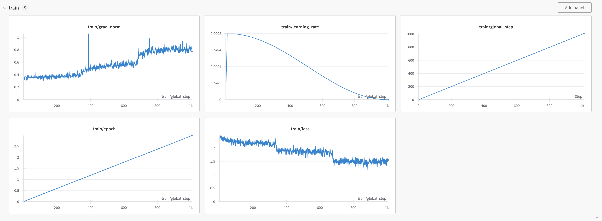
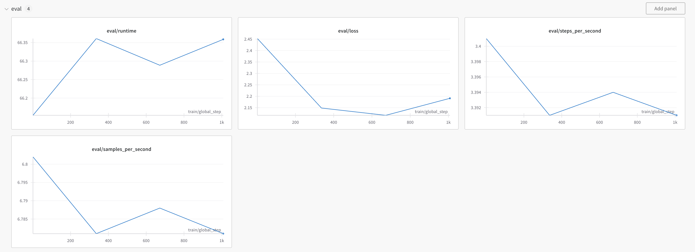

Intro
I have experience fine-tuning smaller encoder style LLMs such as DistilBERT for classification style tasks. I have deployed such models in a production environment and have had great success with them. The Hugging Face trainer class makes it relatively easy and the models are easy to deploy, even on CPU based infrastructure.
But when it comes to training decoder style LLMs for text generation (GPT, llama, Mistral, Qwen, Gemma, etc.), I will be the first to admit that I am a complete noob. It’s something I have followed from a distance, trying to keep up with the recent methods/libraries, but I have not had any experience with it in terms of actual hands on practice.
I don’t want to get into the debate on whether Fine-Tuning LLMs is valuable. The answer is probably most likely, “it depends”. It’s something I want to learn more about, and just want to get started. There are so many new terms/ideas to learn (PEFT, LORA, QLORA, TRL, RHLF, DPO, etc.). My academic mathematical background says to start from the bottom and learn everything along the way. I know that is horrible advice in practice though because I will just get stuck. Instead, I will take advice from Jeremy Howard which is to begin at the top and just get started.
So in this post I will fine-tune my first model with the axolotl library. The model will probably suck, but that’s not the point. Whenever I learn a new tool/library the first thing is to set things up and run a “hello world” type example. Even if it’s just copy/paste. That’s what I will do here. Don’t come here for advanced advice. Follow along if you are in a similar situation as me and just want to get started.
Why use axolotl?
Because Jeremy Howard told me to. Checkout the README. It has an active community behind it, other fine-tuning experts seem to be using it, and you only need to work with a single yaml file.
Environment
If you don’t have access to a GPU locally, do yourself a favour and just start with the GPU cloud provider RunPod. I find it simple to use and there is always a GPU available. There is already a configured axolotl docker container as well. I’m only going to fine-tune a smaller 7B model, therefore I chose a RTX 4090.


Find your running Pod and click connect and SSH in

You will see that there is a tmux for persistent shell sessions being applied. This means that when you shell in and out all your live changes are still there. This is personal preference, but I prefer to have this turned off. I like to have multiple shells opened and do different things in each of them.
vim ~/.bashrcThen comment out the line near the bottom
#[[ -z "$TMUX" ]] && { tmux attach-session -t ssh_tmux || tmux new-session -s ssh_tmux; exit; }There is already a directory volume with lots of disk space set up at /workspace. You can see that from running df -h.
cd /workspace
rm -rf axolotl/
git clone https://github.com/OpenAccess-AI-Collective/axolotl
cd axolotl
pip3 install packaging ninja
pip3 install -e '.[flash-attn,deepspeed]'Make sure you have accounts/tokens with Weights and Biases and Hugging Face. Set up the integration/connection:
wandb login
huggingface-cli loginBecause I turned off the tmux, I prefer just to use screen for longing running tasks/jobs in the terminal. This is completely optional.
apt-get install screen -yI also want to have access to S3 incase I want to copy any data to and from there. This is optional.
aws configureOne other thing to configure is the directories where the pre-trained models and/or datasets get stored when downloading from Hugging Face. I ran into an issue before where the cache was on a volume with very little storage and I ran out of disk space. Just make sure everything goes to the /workspace directory because it has a lot of space.
export HF_DATASETS_CACHE="/workspace/data/huggingface-cache/datasets"
export HUGGINGFACE_HUB_CACHE="/workspace/data/huggingface-cache/hub"
export TRANSFORMERS_CACHE="/workspace/data/huggingface-cache/hub"
export HF_HOME="/workspace/data/huggingface-cache/hub"
export HF_HUB_ENABLE_HF_TRANSFER="1"Text Completion Example
Configuring The YAML File
There are general guidelines in the README. The idea is to start with one of the example YAML files here. I wanted to fine-tune mistral-7b using QLORA, so I started with this YAML file here. I git clone the axolotl repo locally and open the code in my Pycharm IDE. Then I simply start editing the file examples/mistral/qlora.yml directly. That way I can easily see what changes I made with git diff annotations.
The only lines I changed were
datasets:
- path: data.jsonl
type: completion
sequence_len: 1000
eval_sample_packing: False
wandb_project: cal-train
num_epochs: 3
evals_per_epoch: 1
eval_max_new_tokens: 1000I wanted to start with text completion, not instruction fine-tuning. I will try instruction fine-tuning later. I created a small dataset with some transcripts from some of the Cal Newport Podcast episodes. Either way, this is the part where you need to bring your own dataset to fine-tune the model on. It’s important to choose the correct dataset format and configure it properly in the YAML. My dataset is in a data.jsonl file at the root of the axolotl repo. It looks like this:
{"text": " I'm Cal Newport and this is Deep Questions Episode 185. I'm here in my deep work HQ along with my producer Jesse. ......"}
{"text": "Alright, our next question is from Vinny. Vinny asks, how should I adjust my approach to hourly billing ....."}Each record is around 500 words long. That is why I chose sequence_len to be 1000 which is counting tokens (not words). I have about 4000 rows like this in my dataset. Each record is a random excerpt from a podcast transcription.
The complete YAML looks like
base_model: mistralai/Mistral-7B-v0.1
model_type: MistralForCausalLM
tokenizer_type: LlamaTokenizer
load_in_8bit: false
load_in_4bit: true
strict: false
datasets:
- path: data.jsonl
type: completion
dataset_prepared_path: last_run_prepared
val_set_size: 0.1
output_dir: ./qlora-out
adapter: qlora
lora_model_dir:
sequence_len: 1000
sample_packing: true
eval_sample_packing: False
pad_to_sequence_len: true
lora_r: 32
lora_alpha: 16
lora_dropout: 0.05
lora_target_linear: true
lora_fan_in_fan_out:
lora_target_modules:
- gate_proj
- down_proj
- up_proj
- q_proj
- v_proj
- k_proj
- o_proj
wandb_project: cal-train
wandb_entity:
wandb_watch:
wandb_name:
wandb_log_model:
gradient_accumulation_steps: 4
micro_batch_size: 2
num_epochs: 3
optimizer: adamw_bnb_8bit
lr_scheduler: cosine
learning_rate: 0.0002
train_on_inputs: false
group_by_length: false
bf16: auto
fp16:
tf32: false
gradient_checkpointing: true
early_stopping_patience:
resume_from_checkpoint:
local_rank:
logging_steps: 1
xformers_attention:
flash_attention: true
loss_watchdog_threshold: 5.0
loss_watchdog_patience: 3
warmup_steps: 10
evals_per_epoch: 1
eval_table_size:
eval_max_new_tokens: 1000
saves_per_epoch: 1
debug:
deepspeed:
weight_decay: 0.0
fsdp:
fsdp_config:
special_tokens:There is much more I need to learn about the parameters but that will slow me down. Therefore, I’m simply sticking with the defaults.
Put the file on the GPU server/machine. I put it at the root.
vim qlora.yml # copy/paste in your configPre-Processing the Dataset
The docs say to run
CUDA_VISIBLE_DEVICES="" python -m axolotl.cli.preprocess qlora.ymlto pre-process the dataset.
By default, it puts the processed dataset in dataset_prepared_path: last_run_prepared.
ls last_run_preparedIt’s good to take a look at the data in there. See tips on debugging here.
Just drop into an ipython shell and run this:
from transformers import AutoTokenizer
from datasets import load_from_disk
import yaml
directory = !ls last_run_prepared/
with open('qlora.yml', 'r') as f:
cfg = yaml.safe_load(f)
model_id = cfg['base_model']
tokenizer = AutoTokenizer.from_pretrained(model_id)
ds = load_from_disk(f'last_run_prepared/{directory[0]}/')
row = ds[0]
print(tokenizer.decode(row['input_ids']))For me, it returns my first data record. I then can confirm that this is the first row in my data.jsonl file.
<s> Let's do a few more questions here. ....... Thank you. Bye..</s>It’s good to take a look through these and make sure things look all right. There are some special tokens added there. Those are the default special tokens I believe. You can read more about configuring special tokens here.
Training the Model
I run this on a screen -S train but that is optional depending on your preference/setup.
accelerate launch -m axolotl.cli.train qlora.yml
You can inspect GPU usage with nvidia-smi -l.
You can also follow along with the progress using Weights and Biases.


Honestly, the training loss curve looks odd. I know Jeremy Howard and Jonathan Whitaker have written about such things before.
Inference with the Model
The saved model is in qlora-out directory.
ls qlora-outI think you can load it like this. I’m new to loading these adapters and the quantization config.
from transformers import AutoTokenizer, AutoModelForCausalLM, BitsAndBytesConfig
import torch
import json
def read_json_file(file_path):
with open(file_path, 'r') as f:
return json.load(f)
config = read_json_file('qlora-out/config.json')
print(config){'_name_or_path': 'mistralai/Mistral-7B-v0.1',
'architectures': ['MistralForCausalLM'],
'attention_dropout': 0.0,
'bos_token_id': 1,
'eos_token_id': 2,
'hidden_act': 'silu',
'hidden_size': 4096,
'initializer_range': 0.02,
'intermediate_size': 14336,
'max_position_embeddings': 32768,
'model_type': 'mistral',
'num_attention_heads': 32,
'num_hidden_layers': 32,
'num_key_value_heads': 8,
'quantization_config': {'_load_in_4bit': True,
'_load_in_8bit': False,
'bnb_4bit_compute_dtype': 'bfloat16',
'bnb_4bit_quant_storage': 'float32',
'bnb_4bit_quant_type': 'nf4',
'bnb_4bit_use_double_quant': True,
'llm_int8_enable_fp32_cpu_offload': False,
'llm_int8_has_fp16_weight': False,
'llm_int8_skip_modules': None,
'llm_int8_threshold': 6.0,
'load_in_4bit': True,
'load_in_8bit': False,
'quant_method': 'bitsandbytes'},
'rms_norm_eps': 1e-05,
'rope_theta': 10000.0,
'sliding_window': 4096,
'tie_word_embeddings': False,
'torch_dtype': 'bfloat16',
'transformers_version': '4.40.0.dev0',
'use_cache': False,
'vocab_size': 32000}We can use the quantization_config when loading the model:
model_ckpt = 'qlora-out/checkpoint-672/'
tokenizer = AutoTokenizer.from_pretrained(model_ckpt)
quantized_config = BitsAndBytesConfig(**config['quantization_config'])
model = AutoModelForCausalLM.from_pretrained(model_ckpt, device_map="auto", quantization_config=quantized_config)
text = """<s>My name is Cal </s>"""
inputs = tokenizer(text, return_tensors="pt")
with torch.no_grad():
outputs = model.generate(input_ids=inputs["input_ids"].to("cuda"), max_new_tokens=750, do_sample=True, temperature=1)
print(tokenizer.batch_decode(outputs.detach().cpu().numpy(), skip_special_tokens=True)[0])Input: """<s>My name is Cal </s>"""
Output: My name is Cal And this is the Deep Questions podcast, episode 238. I’m here in my Deep Work HQ joined by my producer, Jesse. Jesse, how are you doing? Good, good. Glad to be here, glad to be here. Before we jump into today’s questions, there was a couple of announcements I wanted to make. The Deep Questions podcast is proud to be a sponsor of the 2023 Tropical Health and Wellness Summit, the THW summit that I have been talking about on the show. The summit brings together experts on health and wellness from a wide variety of fields, nutrition, fitness and so on. It allows you to enjoy a full-day virtual conference with the top experts to help you cultivate a healthier and deeper life. You can join from wherever you are and whenever you want, because the talks are available 24 hours a day on demand. If you’re watching this at youtube.com slash Cal Newport media, this will be the THW summit. A lot of good talks I thought, like the one I talked about last week with Mark Sisson and the whole day of these type of speakers talking, so you should definitely check it out. So go to T-H-E-W-S-U-M-M-I-T dot com slash Cal, T-H-E-W-S-U-M-M-I-T dot com slash Cal, that’s all lowercase and all one word, dot com slash Cal to register for free. And if you happen to mention in the registration that you came from deep questions, they will give you a free book to Mark Sisson’s last book, a new definition of fitness. All right, so that’s thws.com slash Cal. I also wanna briefly mention one of the sponsors that makes this podcast possible, which is ExpressVPN. See, if you’re like me, you are worried when you use the internet that people have access to what are you talking about and who are you talking to? The way that you can prevent this from being an issue is by using a VPN. Instead of directly connecting to whatever website or service you wanna use, you instead connect to a VPN server. You explain that server who you wanna talk to. And then that server talks to that website or service on your behalf, encrypts the response and sends it back. Now the people you’re connected to access point, the people who are watching the packets you’re sending, they don’t have a way of knowing for sure who you’re talking to, what you’re saying. Here’s the thing, a VPN really is needed in a world of widespread surveillance. So we’re talking about the people who are at the internet service provider level like your internet service provider, who can see all this stuff. They can see who you’re connecting to, but just the fact that you’re using a VPN blocks them from collecting all of that data.
Input: """<s> Social media is bad. Dont use it. Here is why. </s>"""
Output: Social media is bad. Dont use it. Here is why. And that was the end of the conversation. And I think that approach, which is the approach that’s common today to talking about digital tech and kids, does more harm than good. So I wanna give two examples to illustrate the potential harms of this simplified response. The first comes from my own experience when I was a teen. I was a tech writer for a while when I was in high school, published my second book, How to Win at College when I was 19. In an interview, I talked about digital distractions and teenage life. And the reaction from readers was pretty severe. I received a lot of angry emails about this. There’s been a lot of yelling at me on social media for things that I was suggesting. And I did some public appearances and, you know, got grilled pretty hard on these topics. I actually have this one example I remember. So I didn’t give this talk on the radio, the local NPR in D.C. And so the whole interview was, I was being grilled about kids and tech. And here’s the key question that was asked. So the host said, okay, this question comes from Sam. He’s a 49-year-old teacher and he doesn’t have kids, which was a nice turn of phrases, right? So 49-year-old teacher, does not have kids. He says, can kids really do math or write these days? Like, do you think that all the screen time has gotten them so lost that they’ve forgotten how to actually write or hold a pencil or solve even a simple addition problem? And then he goes on about like, okay, the way these kids walk or whatever. And then he says, he’s a teacher, I don’t want to get fired, right? I mean a lot of teachers have sent this stuff to me, but this was a good version of it. I do a fair number of, he’s like, I don’t want to get fired. All right, so I think he was worried about his job safety. I’m gonna get thrown out of his job for asking this question. All right, so then the host said, okay, well, Cal, you’re on the spot. What do you say? So I had to give an answer and my answer was, let me start by dismissing this particular point as being, and I wasn’t mean, I tried to be gentle, but I was dismissing this particular point as being somewhat silly. Right, because if we’re talking about the impact of social media on math and science achievements, there is not a huge body of scholastic literature on this. So this is a little bit of anecdote. If we’re talking about impact of social media and video games on attention, let’s start with attention span.
These are not copy/pastes from the training data. These are in fact newly generated text with some learned knowledge from the training data as well as some hallucinations :).
Resources
I think it’s best to find a dataset you are interested in and just start fine-tuning a model. Do that first before coming here and reading more. Don’t get stuck with just reading and not making anything. It happens to me all the time. By starting at the top and making something, you will learn something and quickly figure out what you don’t know. For future reading:
- axolotl
- Maxime Labonne
- Hamel Husain
- Understanding Parameter-Efficient Finetuning of Large Language Models: From Prefix Tuning to LLaMA-Adapters
- Parameter-Efficient LLM Finetuning With Low-Rank Adaptation (LoRA)
- Hugging Face Conceptual Guide
- Hugging Face PEFT Library
- Hugging Face TRL - Transformer Reinforcement Learning Library
- Notes on fine-tuning Llama 2 using QLoRA: A detailed breakdown
- Practical Tips for Finetuning LLMs Using LoRA (Low-Rank Adaptation)
- Finetuning LLMs with LoRA and QLoRA: Insights from Hundreds of Experiments
- The Novice LLM training Guide
- How to Fine-Tune an LLM Part 1: Preparing a Dataset for Instruction Tuning
- Fine-Tune & Evaluate LLMs in 2024 with Amazon SageMaker
- Fine-tune Llama 2 with DPO
- Fine-tune Mistral-7b with Direct Preference Optimization
- Supervised Fine-Tuning and Direct Preference Optimization
- DPO paper
- Self-Rewarding Language Models
- LORA Paper
- QLORA Paper